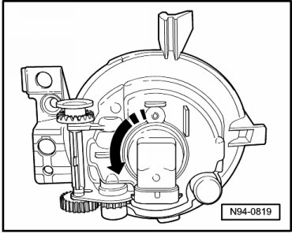

Fog/Driving Lamp Bulb: Service and Repair
Fog Lamp Bulbs
Removing
- Remove fog lamp --> [ Fog Lamp ] Fog Lamp.
- Turn lamp socket in - direction of arrow - and remove it from fog lamp.

The lamp for fog lamp is joined firmly to lamp socket and cannot be replaced separately.
Fog lamp bulb: H11 12V / 55 W
Installing
Install in reverse order of removal, noting the following:
- Tighten the mounting screws to the tightening specification --> [ Front Lamps ] [1][2]Headlamp.
- Next, check function of headlamp.
- Check fog lamp adjustment and adjust if necessary.